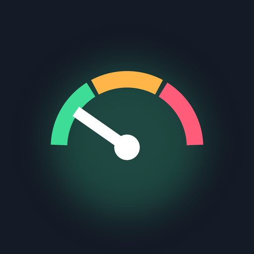

AI額度即時儀表板
Android／iPhone 桌面小工具把常用 AI 服務的使用額度、API 花費與餘額集中到主畫面小工具，用顏色與進度條提醒你哪個快用完，重置時間自動倒數。
常見問題
需要註冊帳號嗎？
不需要。打開 App 就能使用。
金鑰會被傳到哪裡？
只存在你的手機，只在查詢時直接送到該服務商的官方網址（例如 api.openai.com）。開發者沒有伺服器，收不到任何資料。
為什麼 ChatGPT、Gemini 等訂閱要手動輸入？
這些訂閱方案沒有提供公開的額度查詢介面。填一次數字並設定重置週期後，小工具會自動倒數並在到期時回到滿額。
小工具多久更新一次？
Android 每 15 分鐘；iPhone 約每 15 分鐘（由 iOS 決定）。按小工具右上角 ↻ 可立即更新。
聯絡我們
問題回報或建議：isaiah.overcomer@gmail.com